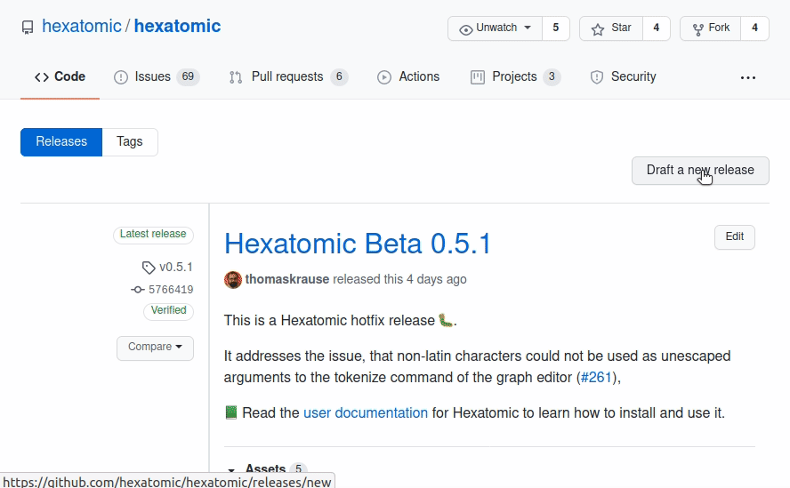

Releases
Releases are versions of Hexatomic that are marked as encapsulating a specific set of tested and documented functionality features or repairs. Releases have a version identifier and are listed on the releases page in the Hexatomic repository.
When to create a release
Hexatomic is a dynamic software project, and therefore there is no release plan with fixed dates for releases. Instead, the maintainers of Hexatomic decide when to create a new release. There are, however, two ground rules for when a release is created:
- Whenever a bug in a previous release of Hexatomic is hotfixed, a new hotfix release must be created.
- Whenever new functionality has been implemented and merged into the
developbranch, a new feature release should be created.
Before you make a release, make sure that you have configured commit signature verification with GPG, or else the release workflow will fail.
Also make sure that you have the Eclipse IDE closed during the release process. The IDE sometimes updates files that may interfere with the release.
Feature releases
To release a new feature (i.e., minor) version of Hexatomic, run the following commands in the repository root directory.
git checkout develop- Checks out the develop branch (feature releases are always based ondevelop).git pull origin develop- Updates the local develop branch.mvn clean install- Builds the project, runs tests, and may update the file headers in Java files.git add .- Adds the updated files - if any - to the Git index. Make sure you only add intended changes.git commit -m "Update file headers"- Commits the updates to version control.git push- Updates the remote develop branch.mvn gitflow:release-start- Starts the release process.- The Maven GitFlow plugin will then prompt you to enter a version number for the release. Make sure you enter a version identifier according to semantic versioning, in the format
MAJOR.MINOR.PATCH. Do not use a-SNAPSHOTsuffix! - Check if the
[Unreleased]changelog section inCHANGELOG.mdis complete and up-to-date. Make changes, commit and push if necessary. mvn keepachangelog:release -N- Updates the changelog in the release branch.git add CHANGELOG.md- Adds the updated changelog to the Git index.git commit -m "Update changelog"- Commits the updated changelog to version control.mvn -Pcff package- Updates the third-party folder and citation file.git add CITATION.cff THIRD-PARTY/- Adds the updated folder and citation file to the Git index.git commit -m "Update third party folder and citation file"- Commits the changed folder and file to version control.git push- Updates the remote release branch.mvn gitflow:release-finish- Finalizes the release process.
Hotfix releases
Hotfixes come into the project via pull requests of a hotfix branch against main.
Important: Do not merge pull requests from hotfix branches into main!
Instead, checkout the hotfix branch locally, and start the merge and release process with the Maven GitFlow plugin:
git checkout hotfix/{hotfix version}- Checks out the respective hotfix branch.git pull origin hotfix/{hotfix version}- Checks for any remote changes to the branch.mvn clean install- Builds the project, runs tests, and may update the file headers in Java files.git add .- Adds the updated files - if any - to the Git index. Make sure you only add intended changes.git commit -m "Update file headers"- Commits the updates to version control.git push- Updates the remote hotfix branch.- Check if the
[Unreleased]changelog section inCHANGELOG.mdis complete and up-to-date. Make changes, commit and push if necessary. mvn keepachangelog:release -N- Updates the changelog in the release branch.git add CHANGELOG.md- Adds the updated changelog to the Git index.git commit -m "Update changelog"- Commits the updated changelog to version control.mvn -Pcff package- Updates the third-party folder and citation file.git add CITATION.cff THIRD-PARTY/- Adds the updated folder and citation file to the Git index.git commit -m "Update third party folder and citation file"- Commits the changed folder and file to version control.git push- Updates the remote release branch.mvn gitflow:hotfix-finish- Finalizes the hotfix and finishes the merge and release procedure.
Promoting releases on GitHub
When you have made a feature or hotfix as described above, you will find a new tag for the released version on the Hexatomic releases page on GitHub.

You can now make a release from this tag:
- Click on Draft a new release on the Releases page.
- Complete the Tag version field with the tag you want to release (e.g.
v0.4.1). - Give the release a title. It should start with
Hexatomic, include any necessary qualifiers (e.g.,Betaif it's a0.MAJOR version) and the version number itself without any prefixes (e.g., use0.4.1instead ofv0.4.1). - Describe the release in three parts:
- A high-level description of the form
This is a Hexatomic <hotfix/feature> release <:bug:/:tada:>!followed by a blank line. - A short description of the fix (including issue numbers with hash prefixes, e.g.
#123) or the added functionality. You can use bullet lists if more than one fix or feature has been added. - A link to the user documentation with, e.g., the following text:
:green_book: Read the [user documentation](https://hexatomic.github.io/hexatomic/user/v0.5/index.html) for Hexatomic to learn how to install and use it.Make sure you get thevMAJOR.MINORpart in the documentation URL right.
- A high-level description of the form
- Click the Preview tab and check if everything looks good.
- Wait until the respective continuous integration workflow has added all "binaries" to the release draft, i.e., the product files for all three major operating systems.
- Click on the green Publish release button. You can always delete and re-create releases from tags if something goes wrong. In any case, making the release also creates an archived version of the source code on Zenodo that is given a DOI.
- A GitHub action should also automatically update the P2 repository. Run the old version of Hexatomic and check an update is found.

Promoting releases to the community
Hexatomic has a mailing list for users: hexatomic-users@lists.hu-berlin.de.
The maintainers of the Hexatomic software project are also maintainers of this mailing list.
Whenever a new version of Hexatomic is released, the mailing list should be notified of this.
To do so, write an email to hexatomic-users@lists.hu-berlin.de using the following template.
Replace the <PLACEHOLDERS> with the actual values.
Subject: Hexatomic <VERSION NUMBER OF THE NEW VERSION> is released!
Body:
Dear list,We have released a new version of Hexatomic (<FULL VERSION NAME OF THE NEW VERSION, e.g., 0.6.0 Beta>). You can download it here: https://github.com/hexatomic/hexatomic/releases/tag/<TAG FOR THE NEW VERSION>.
<BRIEF SUMMARY OF THE CHANGELOG, MENTION THE MOST IMPORTANT CHANGES>
If you have questions or feature requests, please open an issue on the Hexatomic GitHub repository: https://github.com/hexatomic/hexatomic/issues/new/choose.
Many thanks!
<NAME OF THE MAINTAINER>
What to do when releases go wrong?
When a feature release doesn't work as expected, simply
- Checkout the
developbranch (git checkout develop). - Delete the release branch for the version you wanted to release (
git branch -d release/{version}). - Delete the same branch on GitHub (via the web interface).
- Restart the release process from the top.
When a hotfix release doesn't work as expected, simply
- Make the necessary changes in the hotfix branch, then continue with the merge and release process.